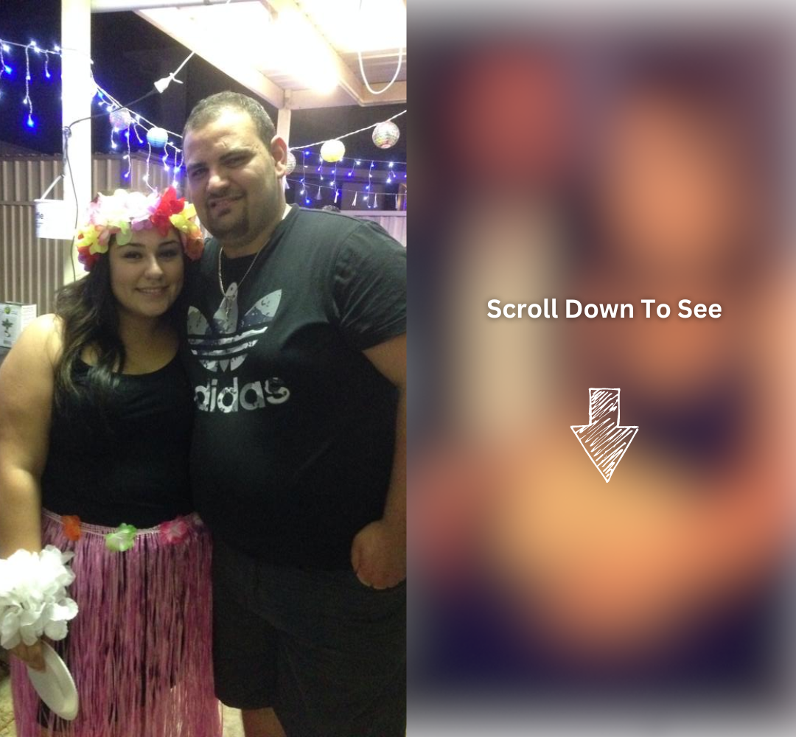
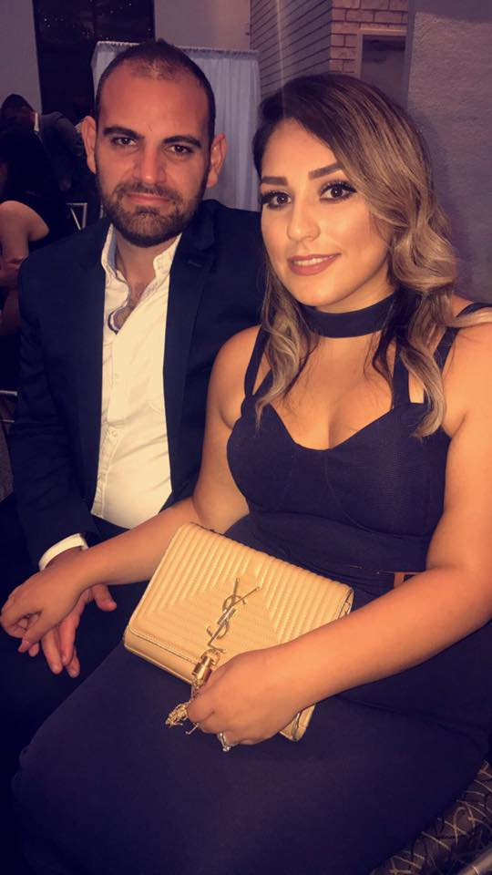
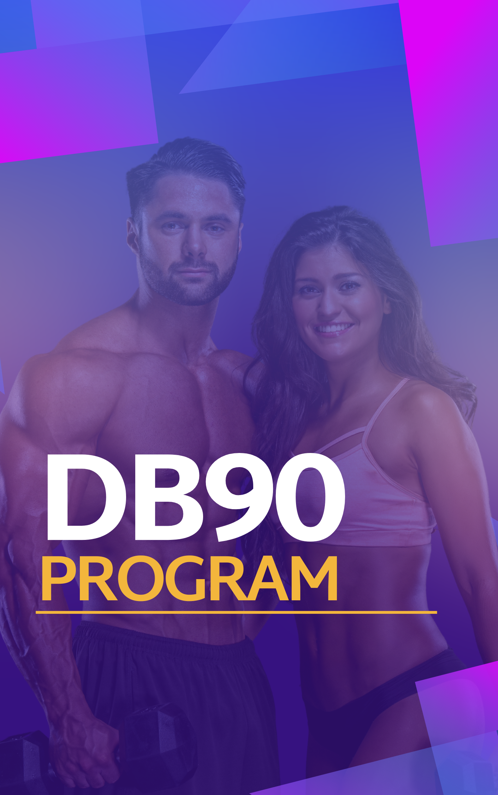
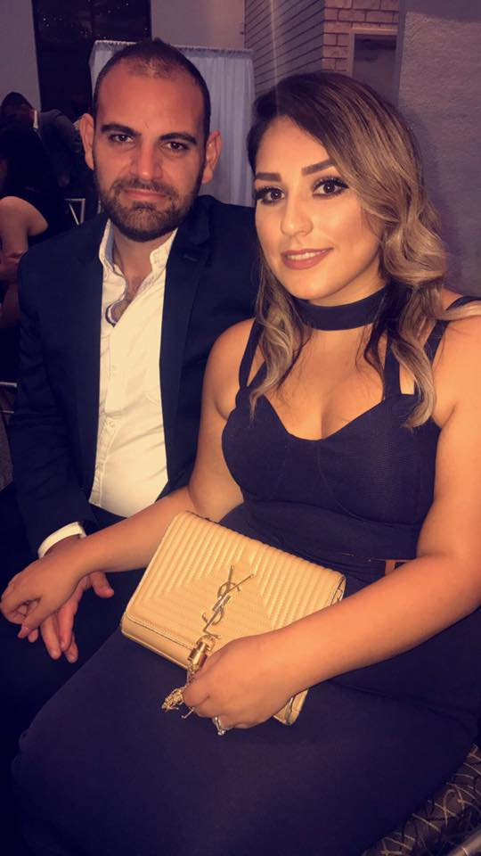
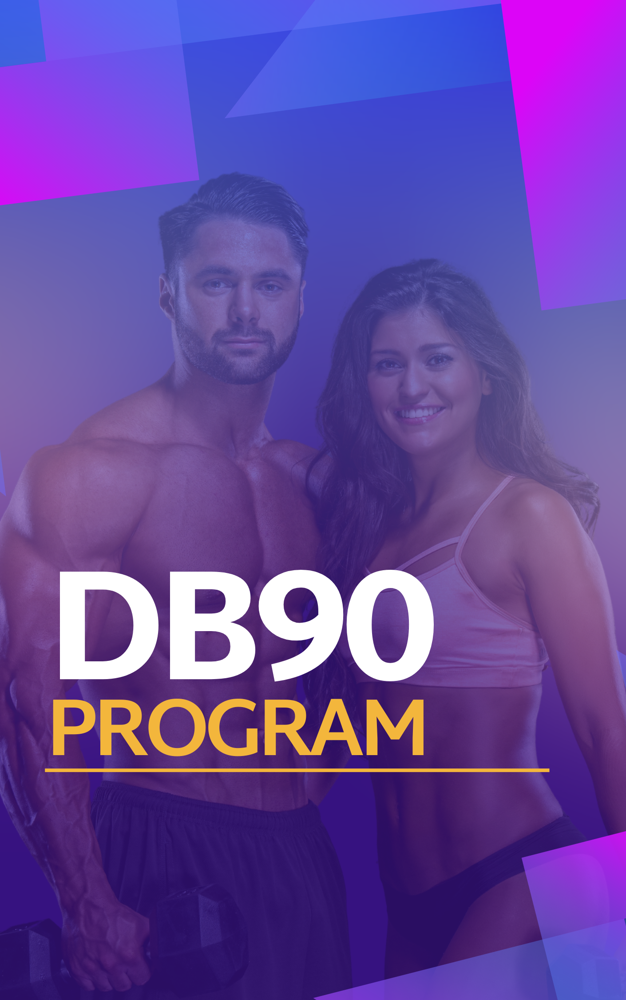

This newlywed couple got in amazing shape just in time for their best friends wedding
After seeing a social media post which they claim "changed their life".
By
Last Updated: 12 hours ago
In October 2019, Peter and Marina got their wedding photos back. Peter
said
he and his wife could not
believe what they were seeing.
“Is that REALLY us? Do we look like that for real?”
Peter said as he looked through his wedding photos.
“The mirror REALLY does play tricks on your mind. It
justifies
what you see. It makes things seem far
better than what they are. I read somewhere the mirror is how you see yourself. And photos are
how
the
world sees you”.
Peter and Marina KNEW it was time for a change. They both wanted to improve their health, manage
their
weight better and achieve healthy weight loss.
The only issue?
They had already tried everything and they just could not seem to find what worked.
“When it comes to losing weight- we had tried everything.
Literally everything, " Marina said.
“Calorie counting. Keto. Paleo. Fasting. Low Carb. High
intensity training. Carnivore. Basically any
diet or exercise program you can think of- we had tried them all” said Peter.

Peter and Marina were so lost in the sea of information that they had practically given
up.
Until something motivated them to try to get in shape again.
“My best friend came over and asked me to be his best man
at
his upcoming wedding. And my wife was asked
to be the Maid of honour. We have been best friends with this couple since high school. We were
so
honoured!
But…We also knew we wanted to get in shape.
My best friend's wedding was in 6 months time so we talked for DAYS about what approach to take”
said
Peter.
Marina spent days and countless hours on the internet looking for a solution. She wanted to make
sure
her and her husband got to the wedding looking their best.
“What really demotivated me was finding the same
information
regurgitated over and over again. And
everything that I found online was something we had already tried.
We almost gave up until…”
Then the big breakthrough happened.
“I was scrolling through social media before bed and I saw
this guy named Coach
Connor.
 He was talking about things like:
• Training your body to eat as much food as
possible.
• How to increase your metabolic rate with
one simple step
• Eating the right superfoods for
optimal results
And so much more.
Everything he said made so much sense and was completely different from what we had
tried.
So we purchased the program for
literally the price
of a cup of coffee!
And it TRULY changed our life”
THIS is the NEW Peter & Marina

Marina said her and her husband saw the best results of their life using the program known as the
DB90 Program.

“Honestly- Never in a million years did I think I could
look
how I look now. This is honestly the
greatest program I have ever used. And the best part is once you get in shape using this
program-
keeping everything off is a breeze!”
Here are the 3 steps that helped Peter and Marina transform:
1- Eat Meals you LOVE every single day
“The fact that I was able to enjoy myself as much as I did
on
my weight loss journey is a blessing.
I think when you immediately have to cut out all your favourite foods- your willpower is
absolutely
zapped” said Marina.
The couple enjoyed plenty of tasty meals on their journey:
And this is exactly what DB90 does
for you.
2- Find The SuperFood that resonates with your body and metabolism
“Every single human body is different. And what works for
one
person may not work for another.
That is why you have to follow the protocol in the program to find what works for you”
said
Peter.
The couple said they had to experiment to see which SuperFoods the program listed worked for
them.
It turns out that a fresh Orange every single day is exactly what Marina’s body needed to jump start
her
metabolism.
But Peter on the other hand- he required Cranberry Juice.
“Once you find what works for you- you are going to love
the
progress you see”- said Marina.
DB90 shows you exactly how to find
what works for you.
3- Get the Complete DB90
Program
(For the price of a bottle of water)
This is the Program Peter and Marina
used to see the best
results of their life.
And the best part? They said it was basically for pennies.
“I literally spent 3 dollars to get the best program in the world. Isn’t that
unbelievable? “
Peter
told us.
He was talking about things like:
• Training your body to eat as much food as
possible.
• How to increase your metabolic rate with
one simple step
• Eating the right superfoods for
optimal results
And so much more.
Everything he said made so much sense and was completely different from what we had
tried.
So we purchased the program for
literally the price
of a cup of coffee!
And it TRULY changed our life”
THIS is the NEW Peter & Marina

Marina said her and her husband saw the best results of their life using the program known as the
DB90 Program.

“Honestly- Never in a million years did I think I could
look
how I look now. This is honestly the
greatest program I have ever used. And the best part is once you get in shape using this
program-
keeping everything off is a breeze!”
Here are the 3 steps that helped Peter and Marina transform:
1- Eat Meals you LOVE every single day
“The fact that I was able to enjoy myself as much as I did
on
my weight loss journey is a blessing.
I think when you immediately have to cut out all your favourite foods- your willpower is
absolutely
zapped” said Marina.
The couple enjoyed plenty of tasty meals on their journey:
And this is exactly what DB90 does
for you.
2- Find The SuperFood that resonates with your body and metabolism
“Every single human body is different. And what works for
one
person may not work for another.
That is why you have to follow the protocol in the program to find what works for you”
said
Peter.
The couple said they had to experiment to see which SuperFoods the program listed worked for
them.
It turns out that a fresh Orange every single day is exactly what Marina’s body needed to jump start
her
metabolism.
But Peter on the other hand- he required Cranberry Juice.
“Once you find what works for you- you are going to love
the
progress you see”- said Marina.
DB90 shows you exactly how to find
what works for you.
3- Get the Complete DB90
Program
(For the price of a bottle of water)
This is the Program Peter and Marina
used to see the best
results of their life.
And the best part? They said it was basically for pennies.
“I literally spent 3 dollars to get the best program in the world. Isn’t that
unbelievable? “
Peter
told us.